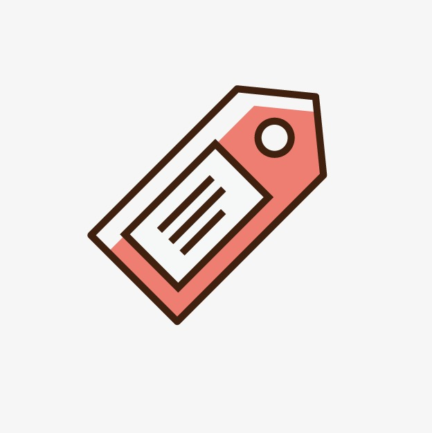

Hi, I'm Robin
software engineerworld traveler and car enthusiast.
About Me
I started coding because of my interest in how web pages work and stayed because of how much I enjoy constantly solving unique problems. The satisfaction of spending countless hours on a project and finally see it all work brings joy to my eyes. On my free time rather than seeing me build a web page from scratch, I find myself rebuilding classic automobiles or exploring a city I haven't been before. Whether its engine work, navigating my way through a city or coding I will find a way to do it.
Projects
-
Bookmark App
The bookmark app utilizes a api based server. It contains the functionality to add, edit and delete bookmarks. Each bookmark contains a title, description and a link. The application is mobile friendly and will adjust itself depending on the device it is viewed on.